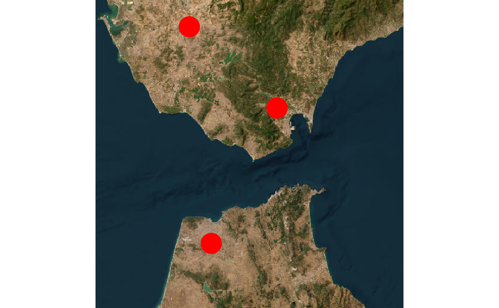
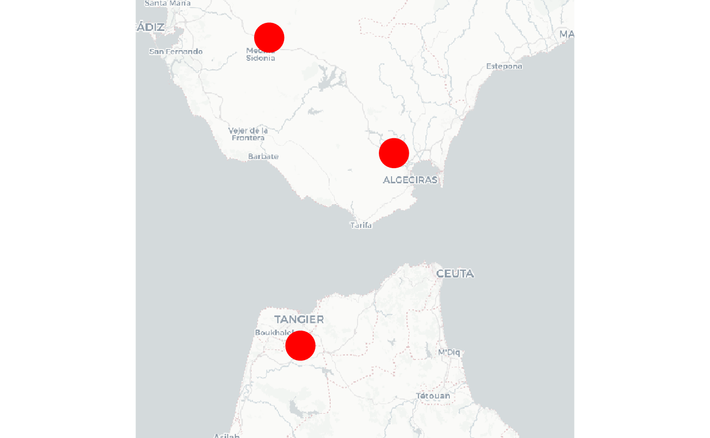

Let’s create example point coordinates and convert them to a spatial (sf) object:
locs <- data.frame(lon = c(-5.8, -5.5, -5.9), lat = c(35.7, 36.2, 36.5))
locs <- locs2sf(locs, crs = 4326)
locs
#> Simple feature collection with 3 features and 0 fields
#> Geometry type: POINT
#> Dimension: XY
#> Bounding box: xmin: -5.9 ymin: 35.7 xmax: -5.5 ymax: 36.5
#> Geodetic CRS: WGS 84
#> geometry
#> 1 POINT (-5.8 35.7)
#> 2 POINT (-5.5 36.2)
#> 3 POINT (-5.9 36.5)Note that SpatVector objects (from terra) are also accepted, and can
be created using rSDM::locs2vect().
Unless a raster ras is provided, occmap
will automatically download a background map from the internet.
occmap(locs, psize = 6)
The background map can be easily changed using the bg
argument:
occmap(locs, psize = 6, bg = "CartoDB.Positron")
occmap(locs, psize = 6, type = "leaflet")
occmap(locs, psize = 6, type = "leaflet", bg = "CartoDB.Positron")Let’s create some new coordinates (e.g. for a different species):
new.locs <- data.frame(lon = c(-5.8, -5.4), lat = c(36.2, 36.5))
new.locs.sf <- locs2sf(new.locs, crs = 4326)